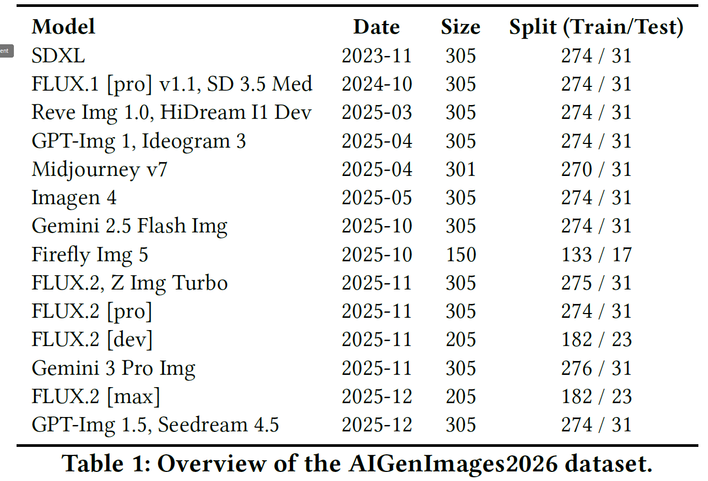

Datasets
AIGenImages2026
AIGenImages2026 is a dataset of images generated by recent text-to-image generative models. You can find more details in the paper.
- 5,439 generated images
- 19 recent generative models
- Chronologically organized generators
- Download: Hugging Face Repository
Example images from AIGenImages2026.

WildFC
WildFC is an evolving in-the-wild dataset collected through an automated fact-check retrieval pipeline.
- 2,884 AI-generated images
- 2,298 segmented image samples
- Real-world fact-checked AI-generated content
- Access Request: Hugging Face Repository

Example images from WildFC.